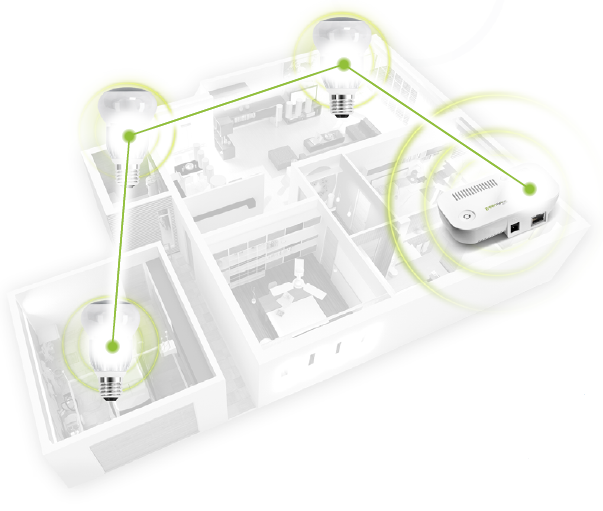

Low-Power Networking
Network lighting operates at a low level of networking power but can successfully connect at long distances because they can send information from light bulb to light bulb.
The remote control and light bulbs in your Remote Network Lighting communicate with each other using a low-power wireless networking technology. In this low-power network, the wireless devices are able to interact with each other over the network by sending data from one device to the next, using the best radio signal path on the network. This path does not have to be a direct connection between the remote control and a network light bulb. It can be through any combination of network light bulbs on the low-power network. So, while a network light bulb in a distant room might not be able to communicate directly with the remote control, it can communicate with another nearby network light bulb that will pass the signal across the low-power network until it reaches the remote control.
Figure: Wireless lighting passing information across light bulbs
Since wireless devices on a low-power network have built-in antennas for radio communication with other connected devices, they may be prone to the same reception problems that you might have with your mobile phone inside a building. Your remote control can have trouble communicating with the network lighting if their radio signals are blocked by obstacles such as large metal panels or walls containing wire mesh.
Switchboards, panelboards, industrial control panels, and motor control centers that are in other than dwelling occupancies and are likely to require examination, adjustment, servicing, or maintenance while energized shall be field marked to warn qualified persons of potential electric arc flash hazards